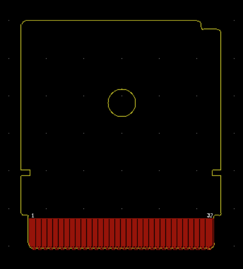

This project is a template for a bootleg Game Pak/cartridge for the Game Boy (fits bootleg/aftermarket cartridge shell only). It includes the PCB edge connector of an original DMG Game Pak.
The board outline looks like the following:

The solder mask layers have been turned off in this preview
© 2020 Jay van Hutten